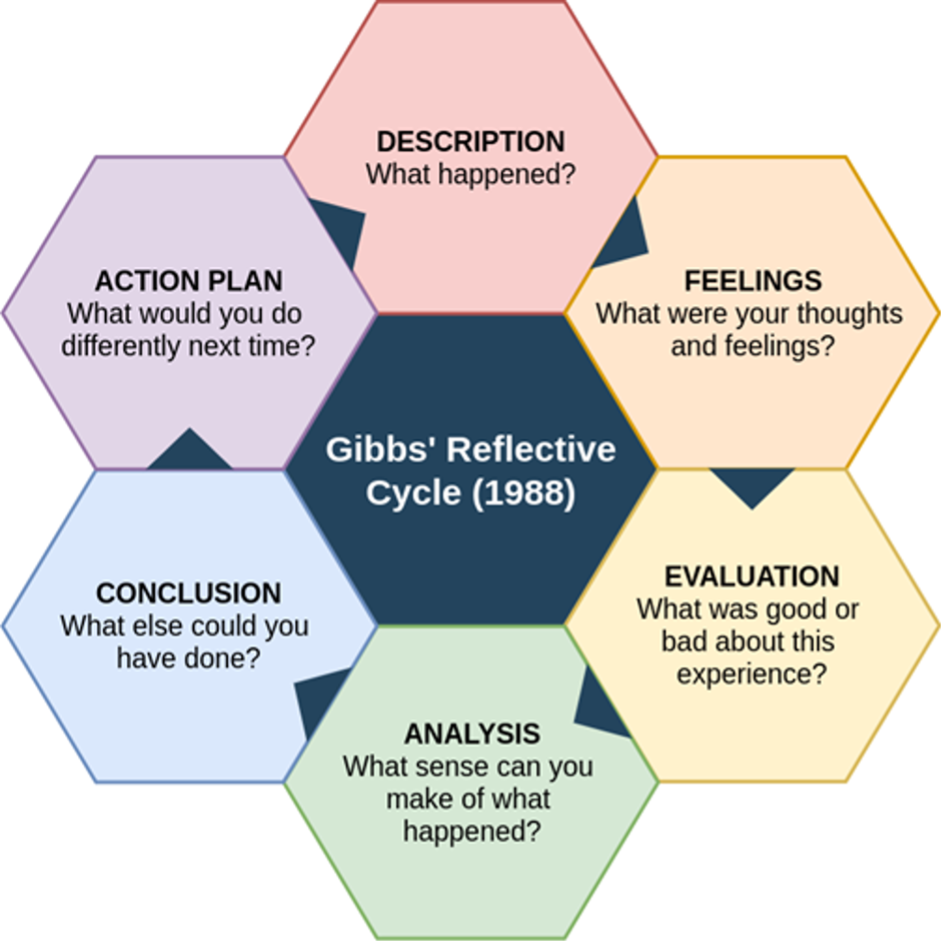
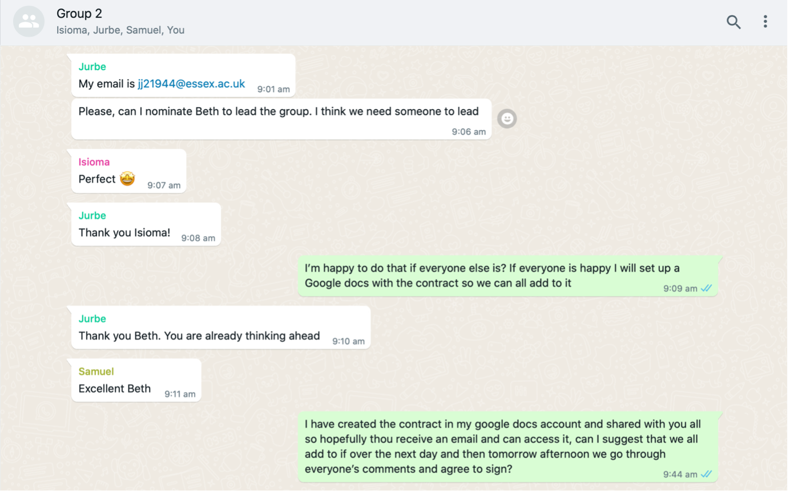
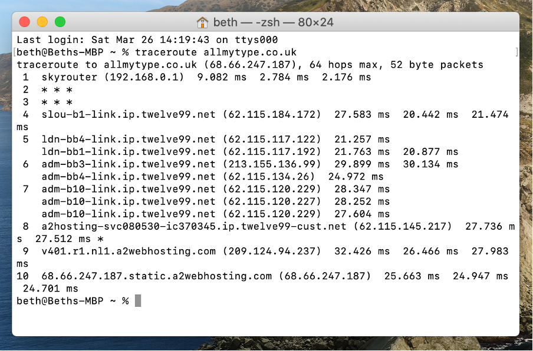
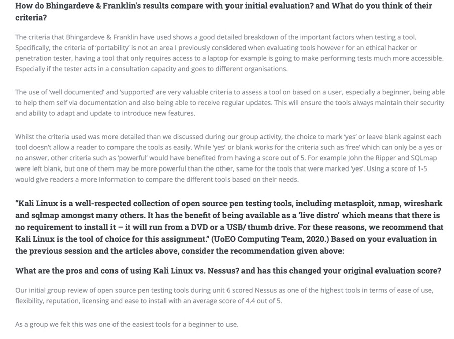
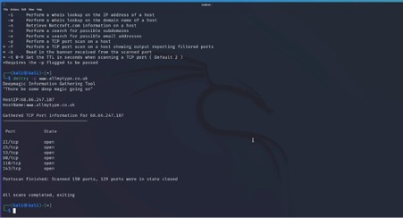
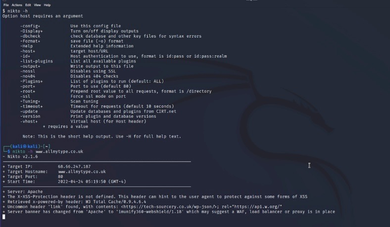
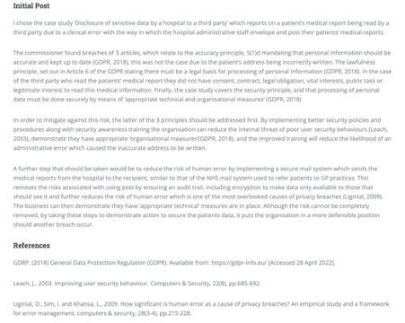

Reflection 4
Final reflection
Reflective writing is an important feature of student portfolios, without it, a portfolio is just a collection of work with no understanding of the learning process (Kathpalia & Heah, 2008). A study on computer science engineers found that completing weekly reflections showed a measurable significant improvement on the quality of reflections over time which helped build essential career skills (Minnes et al, 2017).
Based on this I chose to complete regular reflections throughout the 12-week Network Information Security Management module allowing me to inform my final reflection. To create structure, I used Gibbs’ Reflective Cycle (1988) to ensure my writing was logical and consistent by working through each of the 6 stages (Husebo et al, 2015). This allowed my reflections to be concise, focused and easily comparable.

Description
For this module I worked in group 2 with 3 others and was nominated by them to take the role as leader and subsequently I took charge of setting focus and structure to discussions, activities and assignments. The assignments required us to create a design document based on our website (allmytype.co.uk), regulations, potential weaknesses (Daud et al, 2014) and how these could be mitigated. Followed by an executive summary identifying which vulnerabilities existed in the site and recommendations to address them.
Both the module and assignments focused heavily on the use of scanning tools on our website. Having worked in a risk and compliance role, I did not have any prior experience with any of the tools, nor had I completed any scanning before entering this module.

Figure 1 - Evidence of my role as team lead
Feelings
I was initially concerned about the group work in this module, the logistics of working remotely and quality of the assignments based on my undergraduate experiences. I was apprehensive about producing a report as a group and how to write a document together with different ideas whilst maintaining a well written report.
Based on my lack of experience in vulnerability scanning, I was nervous about the practical work and how challenging I might find it. However, I was excited to develop a new skill to allow me to switch my thinking to that of an attacker (Bratus, 2007) and learn their steps to gathering information.
Evaluation
My experience working in a group was better than expected and I now see the benefit of this type of working. We agreed set times to meet weekly to review our assignment progress and seminar preparation and we used google docs for assignments and group activities to collate ideas. This allowed us to work in parallel and see updates which solved the logistics problem. Working in this way made completion of the assignments a relatively quick task and allowed me to learn from students with different expertise to myself who suggested ideas and conclusions I may not have come to on my own.
I completed each scanning activity independently and found the traceroute scans (Figure 2) relatively straightforward and research into different tools helped me understand the options available as shown in Figure 3. My main challenge was installing and using Kali Linux, so I found guides on several of the Kali applications which helped me to overcome this. We discussed the findings of our scans group meetings, and I was pleased I achieved the same results as other members therefore deeming my work a success.

Figure 2 - Traceroute scan

Figure 3 - My independent review of Kali compared with the previous group review

Figure 4 - Evidence of work I carried out using Kali Linux as part of the group activities

Figure 5 - Evidence of work I carried out using Kali Linux as part of the group activities
Analysis
On reflection, my initial view towards group work was tarnished by my undergraduate experiences, whereas the students on this course take the assignments and learning more seriously due to their professional attitude and the level of study. Whilst having ideas from others helped add to my knowledge and the assignment content, I still found group report writing difficult. Whilst overcoming the logistics and structure of the report was simple, more time was required to ensure the report was not disjointed, which is less necessary with individual work. However, this extra effort was outweighed by how quickly we were able to write the report by splitting it into sections.
Though I was a beginner to vulnerability scanning, this module also incorporated learning about various regulations and security standards such as GDPR and PCI DSS, which my current job role is focused on. This meant I could spend more time on improvement my scanning skills as I didn't have to dedicate as much to learning about these standards which helped with time management.

Figure 6 - Evidence of my GDPR knowledge
Conclusion
Overall, I was pleased with my groups approach to all activities and assignments which showed me the positives of working in a group. Though I still prefer the flexibility of individual studies, the knowledge and ideas that come from sharing discussions with others add to the learning opportunities. There were both pros and cons to report writing in a group but from the experience I found the success to achieving a cohesive report was having a clear plan from the start to minimise duplication of work and allow everyone to contribute equally.
I thoroughly enjoyed learning the basic scanning skills and developing new skills on how to gather information on a website that could be used by an attacker to exploit vulnerabilities. This has given me an oversight into a side of security I have not experienced and the combination of this with security standards will help me in my career development to be a more well-rounded security professional.
Action Plan
1. Establish regular check ins and meetings with any group work and ensure I complete individual studies ahead of group discussions in order to provide valuable input.
2. Ensure future assignments are planned out in advance before diving straight into the writing of the report, thus ensuring structure and focus to the report so all group members have a clear view of the aim.
3. Allow enough time before the assignment deadline to edit the assignment and writing style to ensure the report reads as if written by an individual.
4. Continue to read about and practice the skills I have used where possible to further develop them using Kali Linux.
5. Delve deeper into the security standards studied throughout this course and apply this knowledge to my job where applicable.
References
Bhingardeve, N. & Franklin, S. (2018) A Comparison Study of Open Source Penetration Testing Tools. International Journal of Trend in Scientific Research and Development 2(4): 2595-2597.
Bratus, S., 2007. What hackers learn that the rest of us don't: Notes on hacker curriculum. IEEE Security & Privacy, 5(4), pp.72-75.
Daud, N.I., Bakar, K.A.A. and Hasan, M.S.M., 2014, August. A case study on web application vulnerability scanning tools. In 2014 Science and Information Conference (pp. 595-600). IEEE.
Gibbs G (1988). Learning by Doing: A guide to teaching and learning methods. Further Education Unit. Oxford Polytechnic: Oxford.
Husebø, S.E., O'Regan, S. and Nestel, D., 2015. Reflective practice and its role in simulation. Clinical Simulation in Nursing, 11(8), pp.368-375.
Kathpalia, S.S. and Heah, C., 2008. Reflective writing: Insights into what lies beneath. Relc Journal, 39(3), pp.300-317.
Minnes, M., Mayberry, J., Soto, M. and Hargis, J., 2017. Practice makes deeper? Regular reflective writing during engineering internships. Journal of Transformative Learning, 4(2).